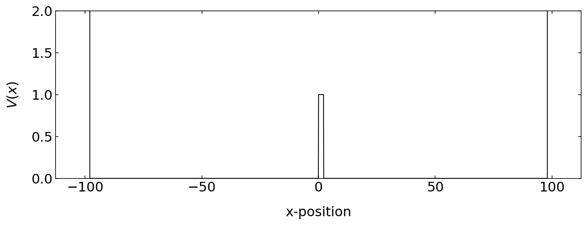
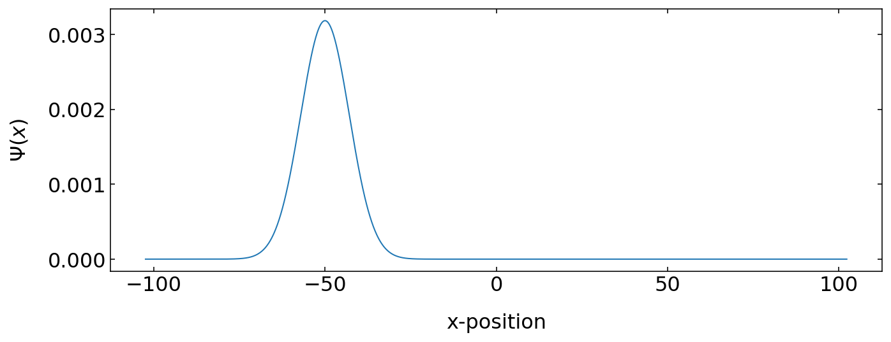
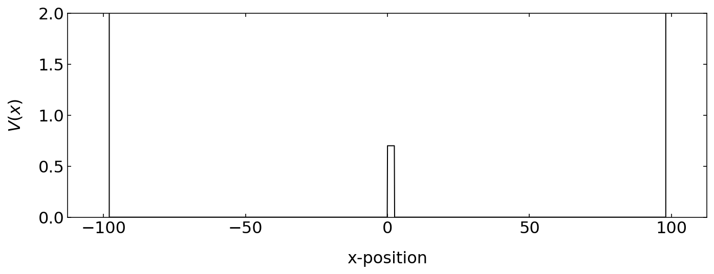
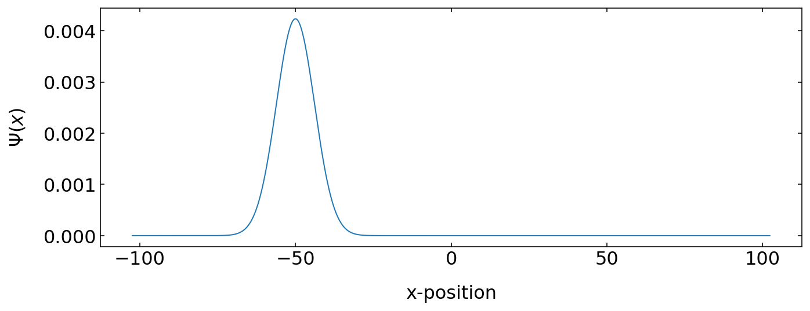

import numpy as np
import matplotlib.pyplot as plt
from scipy.constants import *
from scipy.sparse import diags
from scipy.fftpack import fft,ifft
from time import sleep,time
from scipy import sparse as sparse
from scipy.sparse import linalg as ln
from ipycanvas import MultiCanvas, hold_canvas,Canvas
%matplotlib inline
%config InlineBackend.figure_format = 'retina'
# default values for plotting
plt.rcParams.update({'font.size': 16,
'axes.titlesize': 18,
'axes.labelsize': 16,
'axes.labelpad': 14,
'lines.linewidth': 1,
'lines.markersize': 10,
'xtick.labelsize' : 16,
'ytick.labelsize' : 16,
'xtick.top' : True,
'xtick.direction' : 'in',
'ytick.right' : True,
'ytick.direction' : 'in',}) Split Step Method
If we look at bit closer at the two Schrödinger equations above, we recognize that there is some symmetry in the two Schrödinger equations, which we can use to calculate the time-dependence of the wave function. This type of method is called the split step method.
We may substitute in the right side of the position Schrödinger equation
\[\begin{equation} \hat{D}=\frac{-\hbar^2 }{2m}\frac{\partial^2}{\partial x^2} \end{equation}\]
and
\[\begin{equation} \hat{N}=V(x,t) \end{equation}\]
such that
\[ i\hbar\frac{\partial \Psi(x,t)}{\partial t} = [\hat{D}+\hat{N}]\Psi \]
with the solution
\[ \Psi(x,t)=e^{-i(\hat{D}+\hat{N})t/\hbar}\Psi(x,0) \]
If we only make a small timestep \(dt\), we can write the latter equation also as
\[ \Psi(x,t+dt)=e^{-i\hat{D}dt/\hbar}e^{-i\hat{N}dt/\hbar} \Psi(x,t) \]
We may now turn to momentum space by taking the Fourier transform \(F\)
\[ \tilde{\Psi}(k,t+dt)=F\left [e^{-i\hat{D}dt/\hbar}e^{-i\hat{N}dt/\hbar}\right ]\tilde{\Psi}(k,t) \]
What we know now from the momentum Schrödinger equation is that the operator \(\hat{D}\) will just turn into a multiplication with \(\hbar k^2/2m\) in momentum space and therefore
\[ \tilde{\Psi}(k,t+dt)=e^{i\frac{\hbar k^2}{2m}dt}F\left [e^{-i\hat{N}dt/\hbar}\right ]\tilde{\Psi}(k,t) \]
Thus if we just do the inverse Fourier transform of that, we obtain
\[ \Psi(x,t+dt)=F^{-1}\left [ e^{i\frac{\hbar k^2}{2m}dt} F\left [e^{-i\hat{N}dt/\hbar}\Psi(x,t) \right ] \right] \]
This is the receipe we want to solve the time dependent Schrödinger equation.
hbar=1
m=1def gauss_x(x, sigma, x0, k0):
return (np.exp(-0.5 * ((x - x0)/ sigma) ** 2 + 1j * x * k0)/(sigma * np.sqrt(np.pi)))N = 2 ** 11
dx = 0.1
x = dx * (np.arange(N) - 0.5 * N)dt = 0.005
N_steps = 50
t_max = 120
frames = int(t_max / float(N_steps * dt))V0 = 1
L = hbar / np.sqrt(2 * V0)
a = 3 * L
V_x =V0*(np.heaviside(x,1)-np.heaviside(x-a,1))
V_x[np.abs(x) > 98] = 1e6plt.figure(figsize=(10,4))
plt.plot(x,V_x,'k')
plt.ylim(0,2)
plt.xlabel('x-position')
plt.ylabel('$V(x)$')
plt.tight_layout()
plt.show()
p0 = np.sqrt(2 * m * 0.2 * V0)
dp2 = p0 * p0 * 1./80
d = hbar / np.sqrt(2 * dp2)
k0 = p0 / hbar
v0 = p0 /m
x0=-50
psi_x0 = gauss_x(x, d, x0, k0)
plt.figure(figsize=(10,4))
plt.plot(x,np.abs(psi_x0)**2)
plt.xlabel('x-position')
plt.ylabel('$\Psi(x)$')
plt.tight_layout()
plt.show()
N=len(x)
dx=x[1]-x[0]
k0=-np.pi/dx
dk = 2 * np.pi / (N * dx)
k = k0 + dk * np.arange(N)psi_x=psi_x0.copy()
psi_modx=psi_x*np.exp(-1j * k[0] * x)* dx / np.sqrt(2 * np.pi)
phase_x=np.exp(-1j*V_x*dt/hbar)
phase_k=np.exp(-1j*hbar*k**2/m*dt)fig, ax = plt.subplots(1,1,figsize=(10,5))
plt.xlim(-100,100)
plt.ylim(0,2)
plt.xlabel('x-position')
plt.ylabel(r'$|\Psi(x,t)|^2$')
plt.tight_layout()
plt.plot(x,V_x,'k')
plt.draw()
background = fig.canvas.copy_from_bbox(ax.bbox)
points=ax.plot(x,np.abs(psi_modx)**2,'g')[0]
plt.close() ## setup the canvas
canvas = Canvas(width=800, height=380,sync_image_data=False)
display(canvas)for i in range(10000000):
fig.canvas.restore_region(background)
ax.draw_artist(points)
for j in range(100):
tmp=ifft(phase_k*fft(psi_modx*phase_x))
psi_modx=tmp
points.set_data(x,1e5*np.abs(psi_modx)**2)
fig.canvas.blit(ax.bbox)
X = np.array(fig.canvas.renderer.buffer_rgba())
with hold_canvas(canvas):
canvas.clear()
canvas.put_image_data(X)
sleep(0.01)--------------------------------------------------------------------------- KeyboardInterrupt Traceback (most recent call last) <ipython-input-635-5827bc4795d2> in <module> 3 ax.draw_artist(points) 4 for j in range(100): ----> 5 tmp=ifft(phase_k*fft(psi_modx*phase_x)) 6 psi_modx=tmp 7 points.set_data(x,1e5*np.abs(psi_modx)**2) ~/opt/anaconda3/envs/JupyterLab/lib/python3.7/site-packages/scipy/fftpack/basic.py in fft(x, n, axis, overwrite_x) 87 88 """ ---> 89 return _pocketfft.fft(x, n, axis, None, overwrite_x) 90 91 ~/opt/anaconda3/envs/JupyterLab/lib/python3.7/site-packages/scipy/fft/_pocketfft/basic.py in c2c(forward, x, n, axis, norm, overwrite_x, workers) 28 out = (tmp if overwrite_x and tmp.dtype.kind == 'c' else None) 29 ---> 30 return pfft.c2c(tmp, (axis,), forward, norm, out, workers) 31 32 KeyboardInterrupt:
Old Split Step Method
If we look at bit closer at the two Schrödinger equations above, we recognize that there is some symmetry in the two Schrödinger equations, which we can use to calculate the time-dependence of the wave function. This type of method is called the split step method.
We may substitute in the right side of the position Schrödinger equation
\[\begin{equation} \hat{D}=\frac{-\hbar^2 }{2m}\frac{\partial^2}{\partial x^2} \end{equation}\]
and
\[\begin{equation} \hat{N}=V(x,t) \end{equation}\]
such that
\[ i\hbar\frac{\partial \Psi(x,t)}{\partial t} = [\hat{D}+\hat{N}]\Psi \]
with the solution
\[ \Psi(x,t)=e^{-i(\hat{D}+\hat{N})t/\hbar}\Psi(x,0) \]
If we only make a small timestep \(dt\), we can write the latter equation also as
\[ \Psi(x,t+dt)=e^{-i\hat{D}dt/\hbar}e^{-i\hat{N}dt/\hbar} \Psi(x,t) \]
We may now turn to momentum space by taking the Fourier transform \(F\)
\[ \tilde{\Psi}(k,t+dt)=F\left [e^{-i\hat{D}dt/\hbar}e^{-i\hat{N}dt/\hbar}\right ]\tilde{\Psi}(k,t) \]
What we know now from the momentum Schrödinger equation is that the operator \(\hat{D}\) will just turn into a multiplication with \(k^2\) in momentum space and therefore
\[ \tilde{\Psi}(k,t+dt)=e^{ik^2dt}F\left [e^{-i\hat{N}dt/\hbar}\right ]\tilde{\Psi}(k,t) \]
Thus if we just do the inverse Fourier transform of that, we obtain
\[ \Psi(x,t+dt)=F^{-1}\left [ e^{ik^2dt} F\left [e^{-i\hat{N}dt/\hbar}\Psi(x,t) \right ] \right] \]
This is the receipe we want to solve the time dependent Schrödinger equation.
Setup the simulation
While we did use in the previous calculations a sum over many plane waves to specify a Gaussian wave packet, we use the analytical version
\[ \Psi(x)=\frac{1}{\sqrt{\pi}\sigma}e^{-\frac{(x-x_{0})^2}{2\sigma^2}+ik_{0}x} \]
and the corresponding momentum space wavefunction
\[ \tilde{\Psi}(k)=\frac{1}{\sqrt{\pi}\sigma}e^{-\frac{(k-k_{0})^2}{2\sigma^2}-i(k-k_{0})x} \]
for the Gaussian wavepacket.
def gauss_x(x, sigma, x0, k0):
return (np.exp(-0.5 * ((x - x0)/ sigma) ** 2 + 1j * x * k0)/(sigma * np.sqrt(np.pi)))
def gauss_k(k,sigma,x0,k0):
return (np.exp(-0.5 * (a * (k - k0)) ** 2 - 1j * (k - k0) * x0)/(sigma * np.sqrt(np.pi)))We also need to setup some fundamental parameters.
hbar = 1.0 # planck's constant
m = 1.9 # particle massWe define our spatial domain with an even number of data points, which is important for the FFT method.
N = 2 ** 11
dx = 0.1
x = dx * (np.arange(N) - 0.5 * N)We will also define the temporal domain to be covered by our simulations
dt = 0.01
N_steps = 50
t_max = 120
frames = int(t_max / float(N_steps * dt))Our potential energy landscape shall consists of very high boundaries at the edges and a barrier in the center.
V0 = 0.7
L = hbar / np.sqrt(2 * m * V0)
a = 4 * L
V_x =V0*(np.heaviside(x,1)-np.heaviside(x-a,1))
V_x[np.abs(x) > 98] = 1e6plt.figure(figsize=(10,4))
plt.plot(x,V_x,'k')
plt.ylim(0,2)
plt.xlabel('x-position')
plt.ylabel('$V(x)$')
plt.tight_layout()
plt.show()
Finally, we want to specify our initial wavepacket
p0 = np.sqrt(2 * m * 0.2 * V0)
dp2 = p0 * p0 * 1./80
d = hbar / np.sqrt(2 * dp2)
k0 = p0 / hbar
v0 = p0 / m
psi_x0 = gauss_x(x, d, x0, k0)
plt.figure(figsize=(10,4))
plt.plot(x,np.abs(psi_x0)**2)
plt.xlabel('x-position')
plt.ylabel('$\Psi(x)$')
plt.tight_layout()
plt.show()
class Schrodinger(object):
"""
Class which implements a numerical solution of the time-dependent
Schrodinger equation for an arbitrary potential
"""
def __init__(self, x, psi_x0, V_x,
k0 = None, hbar=1, m=1, t0=0.0):
# Validation of array inputs
self.x, psi_x0, self.V_x = map(np.asarray, (x, psi_x0, V_x))
# Set internal parameters
self.hbar,self.m,self.t,self.k0 = hbar,m,t0,k0
self.N= len(x)
self.dx = x[1]-x[0]
self.dk = 2 * np.pi / (self.N * self.dx)
self.k = self.k0 + self.dk * np.arange(self.N)
self.psi_x = psi_x0
self.compute_k_from_x()
# variables which hold steps in evolution of the
self.x_evolve_half = None
self.x_evolve = None
self.k_evolve = None
self.dt_ = None
# attributes used for dynamic plotting
self.psi_x_line = None
self.psi_k_line = None
self.V_x_line = None
def _set_psi_x(self, psi_x):
self.psi_mod_x = (psi_x * np.exp(-1j * self.k[0] * self.x)
* self.dx / np.sqrt(2 * np.pi))
def _get_psi_x(self):
return (self.psi_mod_x * np.exp(1j * self.k[0] * self.x)
* np.sqrt(2 * np.pi) / self.dx)
def _set_psi_k(self, psi_k):
self.psi_mod_k = psi_k * np.exp(1j * self.x[0]
* self.dk * np.arange(self.N))
def _get_psi_k(self):
return self.psi_mod_k * np.exp(-1j * self.x[0] *
self.dk * np.arange(self.N))
def _get_dt(self):
return self.dt_
def _set_dt(self, dt):
if dt != self.dt_:
self.dt_ = dt
self.x_evolve_half = np.exp(-0.5 * 1j * self.V_x
/ self.hbar * dt )
self.x_evolve = self.x_evolve_half * self.x_evolve_half
self.k_evolve = np.exp(-0.5 * 1j * self.hbar /
self.m * (self.k * self.k) * dt)
psi_x = property(_get_psi_x, _set_psi_x)
psi_k = property(_get_psi_k, _set_psi_k)
dt = property(_get_dt, _set_dt)
def compute_k_from_x(self):
self.psi_mod_k = fft(self.psi_mod_x)
def compute_x_from_k(self):
self.psi_mod_x = ifft(self.psi_mod_k)
def time_step(self, dt, Nsteps = 1):
self.dt = dt
if Nsteps > 0:
self.psi_mod_x *= self.x_evolve_half
for i in range(Nsteps - 1):
self.compute_k_from_x()
self.psi_mod_k *= self.k_evolve
self.compute_x_from_k()
self.psi_mod_x *= self.x_evolve
self.compute_k_from_x()
self.psi_mod_k *= self.k_evolve
self.compute_x_from_k()
self.psi_mod_x *= self.x_evolve_half
self.compute_k_from_x()
self.t += dt * Nsteps
## setup the canvas
canvas = Canvas(width=800, height=380,sync_image_data=False)
display(canvas)fig, ax = plt.subplots(1,1,figsize=(10,5))
plt.xlim(-100,100)
plt.ylim(0,2)
plt.xlabel('x-position')
plt.ylabel(r'$|\Psi(x,t)|^2$')
plt.tight_layout()
plt.plot(x,V_x,'k')
plt.draw()
background = fig.canvas.copy_from_bbox(ax.bbox)
points=ax.plot(S.x,8*np.abs(S.psi_x),'g')[0]
plt.close() # define the Schrodinger object which performs the calculations
S = Schrodinger(x=x,psi_x0=psi_x0,V_x=V_x,hbar=hbar,m=m,k0=-20)for i in range(10000000):
fig.canvas.restore_region(background)
ax.draw_artist(points)
S.time_step(dt, 200)
points.set_data(S.x,8*np.abs(S.psi_x))
fig.canvas.blit(ax.bbox)
X = np.array(fig.canvas.renderer.buffer_rgba())
with hold_canvas(canvas):
canvas.clear()
canvas.put_image_data(X)
sleep(0.01)--------------------------------------------------------------------------- KeyboardInterrupt Traceback (most recent call last) <ipython-input-473-aa3a772b7cb8> in <module> 2 fig.canvas.restore_region(background) 3 ax.draw_artist(points) ----> 4 S.time_step(dt, 200) 5 points.set_data(S.x,8*np.abs(S.psi_x)) 6 <ipython-input-469-1cbcc64ef919> in time_step(self, dt, Nsteps) 82 self.psi_mod_k *= self.k_evolve 83 self.compute_x_from_k() ---> 84 self.psi_mod_x *= self.x_evolve 85 86 self.compute_k_from_x() KeyboardInterrupt: